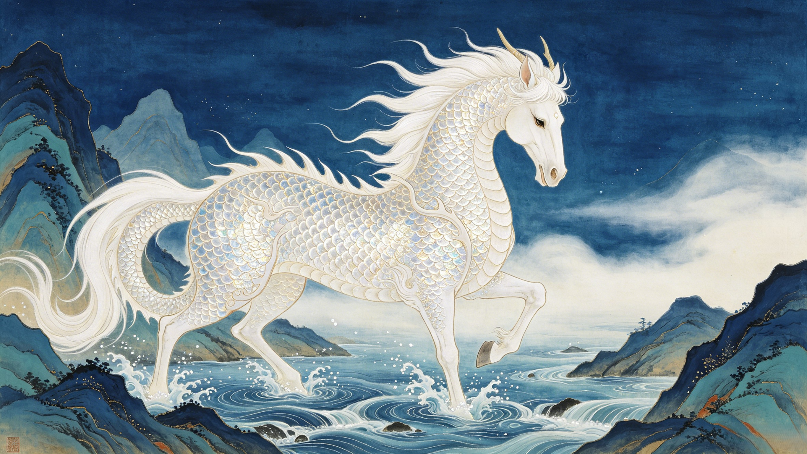

The Dragon Prince Steed
白龙马
He was Ao Lie, third prince of the Dragon King of the Western Sea. He burned his father's imperial pearl, was sentenced to death, and was saved by Guanyin at the last moment — not to be freed, but to spend 14 years as a horse. The fifth pilgrim. The one who carried the journey on his back.
Ao Lie, third son of Ao Run, Dragon King of the Western Sea. A prince of the deep ocean — born to rule, raised in coral palaces, destined for the celestial court. Until one mistake changed everything.
Guanyin commuted his death sentence — on one condition: he would transform into a white horse and carry a mortal monk across 108,000 li of demon-infested wilderness. A dragon prince reduced to a beast of burden.
He never spoke. He never complained. He walked every step of the journey carrying Tang Sanzang himself — the only pilgrim whose body bore the full weight of another. At the end, he became the Naga Prince — dragonhood restored.
Within the Dragon Palace of the Western Sea, Ao Lie received an imperial pearl — a symbol of his royal bloodline. He accidentally set it aflame. The Jade Emperor's sentence was death by beheading. A dragon prince on the execution ground.
Guanyin, passing through on her way to find the scripture pilgrim, saw the dragon's remorse and petitioned heaven for mercy. The sentence was commuted — but not canceled. Ao Lie would wait at the Serpent Coil Mountain for a monk who needed a mount.
When Tang Sanzang's original horse was eaten by a demon, Ao Lie transformed into an identical white steed. For 14 years he carried the monk without a single word. At the journey's end, he was elevated to the rank of Naga Prince — a celestial dragon of the highest order.
The burning of the imperial pearl, the death sentence at the execution ground, and Guanyin's intervention that changed a dragon prince into a pilgrim's steed.
Fourteen years carrying Tang Sanzang across 108,000 li. Every mountain pass, every river crossing — the dragon prince who walked in silence.
His only human-form battle: the Yellow Robe Demon at Precious Image Kingdom. Plus the underwater duel against Sun Wukong and Zhu Bajie — dragon vs. monkey in the deep.
Guanyin's compassion, the Jade Emperor's justice, and the path from condemned criminal to sanctified pilgrim — how heaven's harshest sentence became its greatest act of grace.
The fifth pilgrim's elevation at the journey's end, his cultural significance as a symbol of silent devotion, and how a dragon prince in horse form captured hearts across centuries.
What the white horse symbolizes in Chinese tradition — purity, loyalty, silent strength. Dragon-horse duality across world mythology and why Ao Lie's story endures.
Your words will drift through the depths of the Western Sea — preserved in the silence of the dragon prince for all time.
Dive Deeper